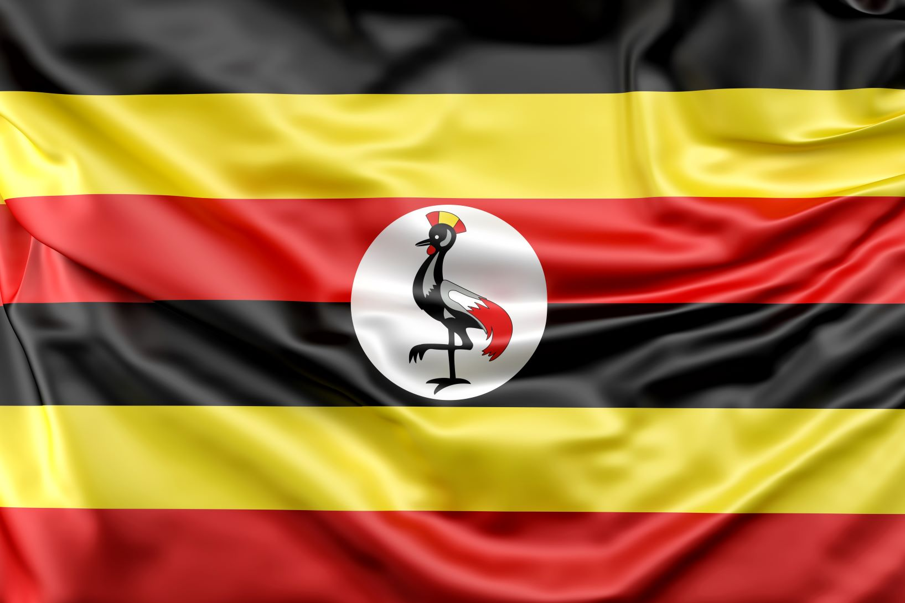

MUHAMMAD NOORDIN
About me

My name is Muhammad Noordin. I am a student in WDD131 course, learning web development. I am someone who believes that growth comes from curiosity and effort. I enjoy learning new things, especially when they challenge me to think differently or solve problems creatively.
Jinja, Uganda

Uganda, known as the "Pearl of Africa," is a landlocked East African nation straddling the equator, bordered by Kenya, South Sudan, the DRC, Rwanda, and Tanzania. With Kampala as its capital, the country features a diverse landscape ranging from snow-capped mountains to lush savanna and a significant portion of Lake Victoria.